Locking or Stacking of MTUs in the Input Queue Failed / Push MTU Failure
Error Code
| Dec | Hex |
|---|---|
|
258.000.00013 |
0x102.0x00.0x0D |
Complaint Description
Input or MTU Queue Stacking Issue
05/15/2023 12:32:13 (15 08:32:13) [E] (Critical , High ) [LoadingManagement] Locking or stacking of the MTUs in the Input Queue failed. [258.000.00013]
05/15/2023 16:38:04 (15 12:38:04) [E] (Critical , High ) [InputQueue] Input Queue pack drive motor suffered step loss ID=49 InitializeInstrumentResponse: , start=16:36:53.926 end=16:38:04.626. Event [0x50.0x00.0x000A] at 16:37:55.626 bytes: 50 02 03 00 0A [080.000.00010]
Push MTU failure in service software. “50 20 02 00 34 00”
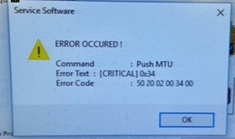
Technical Support
Check Input Queue
-
Check if MTUs are placed in front of the pusher.
-
Check for jammed MTUs or obstructions in the queue.
-
Make sure only 25 MTUs are loaded in the queue.
-
Remove incorrectly seated MTUs or obstructions.
-
Try opening and closing the Input Queue to make sure it will lock correctly.
-
If the pusher is staying in front and is not touching MTU, push it back manually until it meets the MTU. The drawer should now lock.
Next Steps
-
Restart the instrument.
-
Perform a prime and/or MW clean to test the Input Queue.
-
Review case history for previous Input Queue errors.
-
Notify FSE
 Field Service Engineer. if there were recent cases.
Field Service Engineer. if there were recent cases. -
Instruct customer to monitor instrument.
Field Service
Bad MTUs
Resolution
-
If possible, take a photograph of the state of the MTUs.
-
Remove the MTUs by hand, taking care not to spill tiplets.
-
Inspect MTUs for any abnormalities.
-
If the MTU is suspect as defective note the lot number of the MTUs contact Tech Support to open a complaint and return the suspect bad MTUs for further investigation.
Test
Make sure other MTU lot numbers are able to process through the Input Queue successfully.
Loose Connection
Resolution
Reseat loose connection.
Test
Inspect to make sure all connections are secure.
Misaligned MTU Input Queue Rails
Resolution
Use the alignment tool to properly align the rails per the Panther Service Manual.
Test
-
Open the MTU Input Queue.
-
Slide several MTUs back and forth across the rails. The MTUs should slide smoothly.
-
Also, use the Rail Alignment Tool to check the rail alignment.
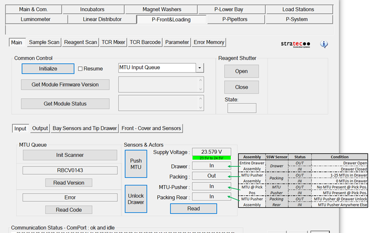
Note: See diagrams and images below to help identify sensors and flags accordingly.
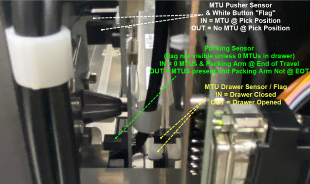
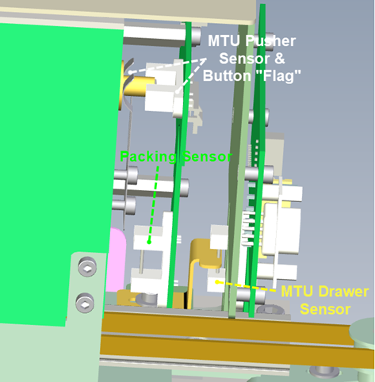
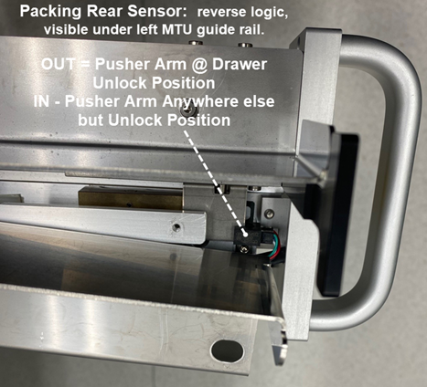
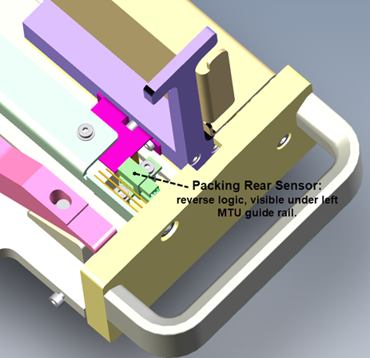
Dirty, Misaligned, or Faulty MTU Pusher Sensor
Resolution
-
Clean the packing optical sensor.
-
Verify the white plastic packing button easily moves into the sensor when pressed, and springs forward again when released. If not, inspect for cleanliness, or broken or damaged spring.
-
Tighten the three posts and screws that secure the slave PCB.
-
Replace the auxiliary PCB.
Test
-
Unlock and open the MTU Input Queue, and inspect the MTU Pusher optical sensor behind the white packing button. Note whether the sensor or white plastic packing button are dirty. Clean as necessary.
-
Using Service Software, read sensor status. With no MTU at the pick position, the MTU Pusher Sensor should read “OUT”.
-
Push the white packing button into the MTU Pusher sensor and re-read sensor status. When the white plastic packing button interrupts the MTU Pusher, sensor status should change to read “IN”.
-
Open the MTU Input Queue and inspect the three posts holding the Slave PCB. The posts should be secure, and the screws securing the PCB should be tight.
Note: Some IQs used small washers between posts, and Slave PCB to space the sensor/Slave PCB further away from the white packing button for more accurate changes in state. Consider removing these washers if present, reassemble, and re-test to see if washer thickness makes a difference in MTU Pusher Sensor States (In vs. Out in Service Software GUI
Graphical User Interface – allows users to interact with the software using images, graphical icons, and visual indicators rather than text commands.). -
Using Service Software, pack some MTUs. If the module packs MTUs correctly, yet the system still reports a packing error, it is likely due to a faulty MTU Pusher sensor.
Faulty Encoder
Resolution
Replace the Encoder or the Module.
Test
Using Service Software, pack some MTUs.
If the motor does not stop and keeps pushing for an excessive amount of time, it is likely due to a faulty encoder.
Faulty Motor or Drive Mechanism
Resolution
Replace the motor, belt, or the module.
Test
Using Service Software, initialize the module.
Note whether the MTU pusher moves. If it does not move, it is likely due to a faulty motor or drive belt.
Also check for debris, such as tiplets.
Spring and Pusher
The issue in the MTU queue causing the problem is the plastic pusher at the end of the queue, by where the LD picks the MTU. I found the carrier fallen over when trying to pick the empty one from the queue.
Basically, the springs in the pusher are too strong. Therefore the pusher pushes the MTU down too hard, causing the MTU to be at an angle when it is the last one on the carrier. Because the MTU does not sit perfectly in the slot, the carrier hits into it when being taken out of the queue, or when being put back in. A photograph of the MTU appears below. Since the pusher/springs are not orderable, the entire module needs to be swapped.
I have run into an issue caused by these springs being too strong in the past. This error came in the form of an MTU stacking error in the queue. I have tried shaving down the plastic part, but the issue came back, so the entire module was replaced. Would it be possible for these springs/pushers to be orderable in the future?
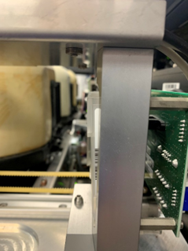
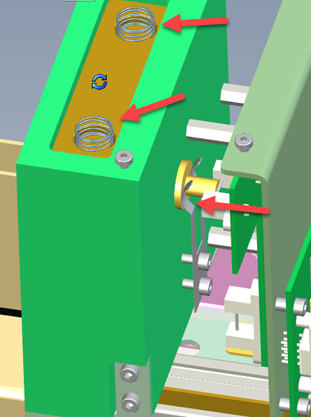
Resolution
There are two springs up top. In the past, sometimes an extra spring would coil together doubling the force. It is worthwhile to check.
The pusher force can be adjusted by bending the forked pusher spring slightly.
An obstruction may prevent the input drawer from closing completely. This prevents the latch from falling, which obstructs the pusher movement.
Test
Using Service Software, pack some MTUs.
If the motor does not stop and keeps pushing for an excessive amount of time, it is likely due to a faulty encoder.
Ball Detent Latch
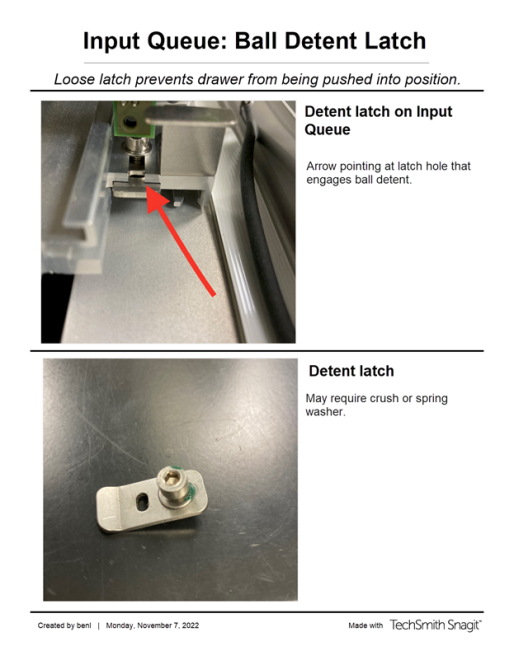
Drawer Latch Adjustment
Input queue step loss errors, or unable to initialize due to input queue drawer not pushed in all the way.
The drawer latch cannot drop, which prevents the pusher from moving into initial position, or away.
-
Drawer latch and latch block cannot drop into place correctly.
-
Pin on pusher cannot move if latch does not drop down.
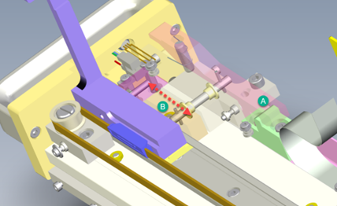
-
Loose detent foot, I do not recall the machined IQ having the same issue.
New foot, which comes with casted IQ. This design seems problematic, as it often gets loose. Clamped down with screw, but force is front to back.
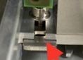
-
Drawer flag / home sensor positioning, protruding too far forward during assembly, or FSE adjusted because detent foot fell off before?
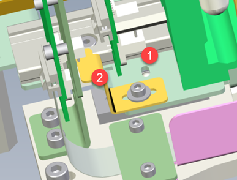
 button at the top of the page to send feedback, comments, or change requests.
button at the top of the page to send feedback, comments, or change requests.